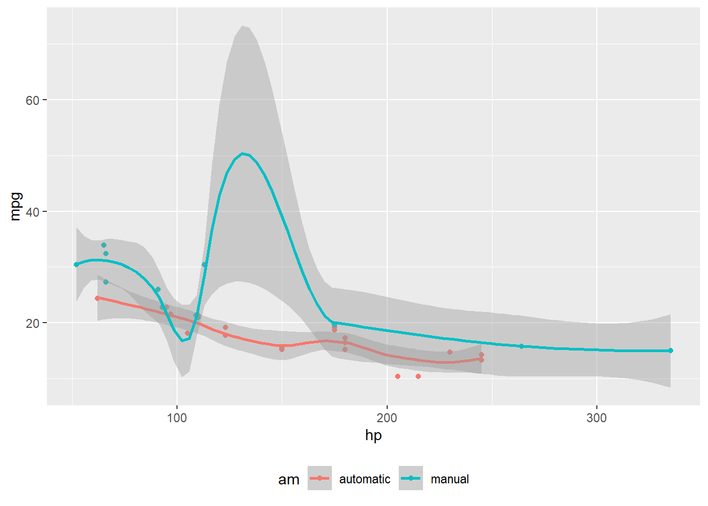

1 기사 레이아웃
기사(Article) 작성에 Quarto 는 다음 레이아웃을 지원한다.
- 기본 콘텐츠 영역 채우기
- 콘텐츠 영역 넘겨 채우기
- 전체 페이지 채우기
- 문서 여백(margin) 채우기
2 레이아웃 (Layout)
2.1 기본
.column-body 을 기본을 사용하게 된다.

2.2 Body 칼럼
기본 콘텐츠 영역을 살짝 넘겨 콘텐츠를 담을 영역을 넓히고자 할 때는 .column-body-outset을 사용한다.
:::{.column-body-outset}

:::
2.3 전체 페이지
.column-page를 사용하게 되면 전체 페이지 칼럼을 사용하여 콘텐츠를 담는 공간을 넓힐 수 있다.
:::{.column-page}

:::
2.4 표 사례
이미지 뿐만 아니라 R 혹은 파이썬 실행결과 산출되는 그래프와 표도 레이아웃을 확장하여 구현할 수 있다.
```{r}
#| column: page
knitr::kable(
mtcars[1:6, 1:10]
)
```| mpg | cyl | disp | hp | drat | wt | qsec | vs | am | gear | |
|---|---|---|---|---|---|---|---|---|---|---|
| Mazda RX4 | 21.0 | 6 | 160 | 110 | 3.90 | 2.620 | 16.46 | 0 | 1 | 4 |
| Mazda RX4 Wag | 21.0 | 6 | 160 | 110 | 3.90 | 2.875 | 17.02 | 0 | 1 | 4 |
| Datsun 710 | 22.8 | 4 | 108 | 93 | 3.85 | 2.320 | 18.61 | 1 | 1 | 4 |
| Hornet 4 Drive | 21.4 | 6 | 258 | 110 | 3.08 | 3.215 | 19.44 | 1 | 0 | 3 |
| Hornet Sportabout | 18.7 | 8 | 360 | 175 | 3.15 | 3.440 | 17.02 | 0 | 0 | 3 |
| Valiant | 18.1 | 6 | 225 | 105 | 2.76 | 3.460 | 20.22 | 1 | 0 | 3 |
2.5 화면 칼럼
.column-screen 을 사용하게 되면 모니터 화면을 가득 채울 수 있다.
::: {.column-screen}

:::
마찬가지로 R 혹은 파이썬 코드에 대해서 동일한 결과를 얻을 수 있다.
```{r}
#| column: screen
library(leaflet)
leaflet() %>%
addTiles() %>% # Add default OpenStreetMap map tiles
addMarkers(lng=174.768, lat=-36.852, popup="The birthplace of R")
```Code
library(leaflet)
leaflet() %>%
addTiles() %>% # Add default OpenStreetMap map tiles
addMarkers(lng=174.768, lat=-36.852, popup="R 출생지")2.6 화면 인셋
화면 인세(inset)을 사용하여 전체 모니터 화면 전체로 그래프 3개를 넣을 수 있다.
```{r}
#| column: screen-inset-shaded
#| layout-nrow: 1
plot(cars)
plot(iris)
plot(pressure)
```Code
plot(cars)
plot(iris)
plot(pressure)


3 여백 콘텐츠
3.1 여백 이미지
출판에서 유용한 기능 중 하나가 여백에 중요 정보를 기술하는 것이다. .column-margin 클래스를 사용하여 해당 기능을 구현한다.
::: {.column-margin}

:::
3.2 여백 그래프
여백에 ggplot 그래프 객체를 위치시킬 수도 있다.
```{r}
#| label: fig-mtcars
#| fig-cap: "MPG vs horsepower, colored by transmission."
#| column: margin
library(ggplot2)
mtcars2 <- mtcars
mtcars2$am <- factor(
mtcars$am, labels = c('automatic', 'manual')
)
ggplot(mtcars2, aes(hp, mpg, color = am)) +
geom_point() + geom_smooth(formula = y ~ x, method = "loess") +
theme(legend.position = 'bottom')
```Code
library(ggplot2)
mtcars2 <- mtcars
mtcars2$am <- factor(
mtcars$am, labels = c('automatic', 'manual')
)
ggplot(mtcars2, aes(hp, mpg, color = am)) +
geom_point() + geom_smooth(formula = y ~ x, method = "loess") +
theme(legend.position = 'bottom')
3.3 여백 표
마찬가지로 여백에 표를 위치시킬 수도 있다.
```{r}
#| column: margin
knitr::kable(
mtcars[1:6, 1:3]
)
```Code
knitr::kable(
mtcars[1:6, 1:3]
)| mpg | cyl | disp | |
|---|---|---|---|
| Mazda RX4 | 21.0 | 6 | 160 |
| Mazda RX4 Wag | 21.0 | 6 | 160 |
| Datsun 710 | 22.8 | 4 | 108 |
| Hornet 4 Drive | 21.4 | 6 | 258 |
| Hornet Sportabout | 18.7 | 8 | 360 |
| Valiant | 18.1 | 6 | 225 |
3.4 수식 등
.column-margin 클래스에 수식을 비롯한 기타 콘텐츠도 반영시킬 수 있다.
::: {.column-margin} \([a, b]\) 구간 \(x\)에 대한 미적분학의 첫 번째 기본 정리(first fundamental theorem of calculus) 는 다음과 같다.
\[\frac{d}{dx}\left( \int_{a}^{x} f(u)\,du\right)=f(x).\]
:::\([a, b]\) 구간 \(x\)에 대한 미적분학의 첫 번째 기본 정리(first fundamental theorem of calculus) 는 다음과 같다.
\[\frac{d}{dx}\left( \int_{a}^{x} f(u)\,du\right)=f(x).\]
4 페이지 나누기
\(\LaTeX\)의 \newpage와 같은 기능을 으로 구현할 수 있다.
page 1
page 25 각주 미주등 참조
각주, 미주를 비롯하여 참고문헌 등 다양한 참조를 여백에 바로 표시할 경우 다음과 같이 작성하면 된다. 이와 같이 작성하면 참고문헌 등 관련 정보를 문서 마지막에 위치하는 대신 여백에 바로 표시된다.
---
reference-location: margin
citation-location: margin
---팔머펭귄 데이터셋은 붓꽃 데이터를 대체하기 위해 몇년에 걸쳐 안정화를 이룬 위대한 데이터셋(Horst et al., 2020)이다. 한국에도 도입이 시급하다.
[This is a span that has the class aside which places it in the margin without a footnote number.]{.aside}[...]{.aside}와 같이 텍스트를 넣게 되면 여백에 해당 콘텐츠를 옮길 수가 있다.
6 그래프 여백 캡션
R 그래프를 제작한 후에 캡션을 보통 그래프 하단에 붙이게 되나 그래프에 대한 설명을 여백 캡션으로 두고자 하는 경우 cap-location: margin 을 R 코드 덩어리 내부에 지정하면 된다.
```{r}
#| label: fig-cap-margin
#| fig-cap: "MPG vs horsepower, colored by transmission."
#| cap-location: margin
library(ggplot2)
mtcars2 <- mtcars
mtcars2$am <- factor(
mtcars$am, labels = c('automatic', 'manual')
)
ggplot(mtcars2, aes(hp, mpg, color = am)) +
geom_point() + geom_smooth(formula = y ~ x, method = "loess") +
theme(legend.position = 'bottom')
```Code
library(ggplot2)
mtcars2 <- mtcars
mtcars2$am <- factor(
mtcars$am, labels = c('automatic', 'manual')
)
ggplot(mtcars2, aes(hp, mpg, color = am)) +
geom_point() + geom_smooth(formula = y ~ x, method = "loess") +
theme(legend.position = 'bottom')
7 콘텐츠 위치 지정
body, page, screen, outset, inset, right, left 를 달리하여 콘텐츠 레이아웃을 자유자재로 위치시킬 수 있다.
.column-body-outset-right.column-page-inset-right.column-page-right.column-screen-inset-right.column-screen-right.column-body-outset-left.column-page-inset-left.column-page-left.column-screen-inset-left.column-screen-left
.screen-inset-right를 해당 콘텐츠에 지정할 경우 우측 전체 영역에 콘텐츠를 넣을 수 있다.
:::{.screen-inset-right}

:::